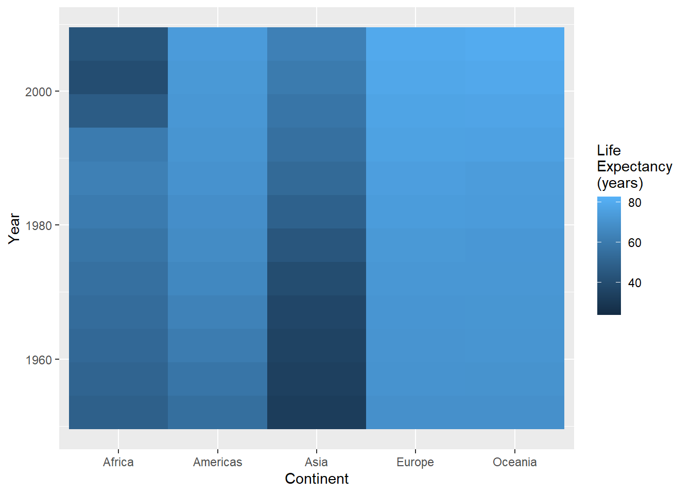
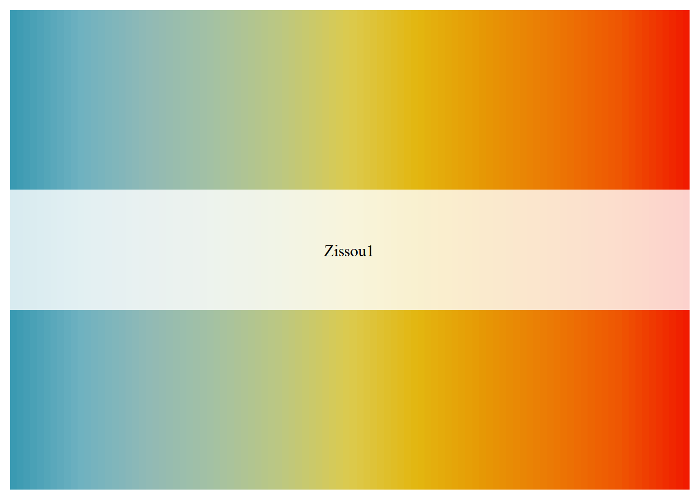

2Expanding palettes: Working with continuous scales in ggplot2
2.0.1 Continuous color scales
As opposed to discrete color scales, continuous scales are used when the data exist across a range with no meaninfgul gaps between values. For example, you could have an infinite number of unique values even between the interval between 0 and 1. There are no discrete groups, breaks, or categories. From a color perspective, these are usually expressed in terms of a color ramp or gradient, where there is a smooth transition of values across a color spectrum.
To view some options for these kind of scales, we’ll use the gapminder data, but we’ll use the geom_tile function to create a heatmap.
library(gapminder)#plot life expectancy by continent and year as heat map#note the backslash n used to create new lines in legend #titleggplot(gapminder,aes(x=continent,y=year,fill=lifeExp)) +geom_tile() +labs(x="Continent",y="Year",fill="Life \nExpectancy \n(years)")

A heatmap takes values at intersections between the x and y axes and places a tile (polygon) that is colored according to the continuous variable of interest. This can be useful for viewing a lot of data across a space of values. However, it’s usually more readable when the data are organized somehow. The ordering of the years makes sense here, but let’s reorder the continents based on median life expectancy:
This makes things a little clearer, in the sense that continents with lower life expectancy are organized to the left, while those with higher average life expectancy are on the right. But the distinctions between values is a little muddled. We can try to get a better picture by modifying the gradients.
2.0.2 Custom gradients
The default gradient ggplot uses runs from dark to light blue (also known as the Blues palette). What if we wanted to look at this using a different color scheme? Let’s start with the old stand-by: temperature colors. If we wanted the scale to go from red to blue, we could use the scale_color_gradient function. This takes two arguments: low defines the color used for the lowest value, and high defines the highest:
Try plotting this plot or the density plot from the previous section using some different themes. For example:
theme_linedraw()
theme_dark()
theme_void()
There are even more themes to choose from if you add the ggthemes package. Load this package (install first if you need to), and then explore a few more!
For some data like temperatures, the scheme above seems like it might work well, but for looking at life expectancy data, our color scheme is a little underwhelming. It’s hard to know, for example, how each continent compares to the others.
We can get a better sense of this by using a diverging palette: one that varies in two directions away from a central value. First, let’s get the overall median value for the lifeExp variable to be a central value:
medLE<-median(gapminder$lifeExp)medLE
[1] 60.7125
We can use gradients that are scaled with a midpoint value using the scale_fill_gradient2 function (the “2” meaning “2-way”). This works pretty much the same way, but we add a midpoint argument to define the value (here we’ll use the medLe object we just created), and a mid argument to represent the color to be used at the midpoint of the gradient:
Now our map is getting more visually coherent. We can now see more clearly, for example, the values that each country starts and ends with, which gives us a better sense of the change that’s occurring over time.
Yet another alternative would be to scale between more one midpoint. To do this, we’d use the scale_fill_gradientn function (“n” standing for a number of midpoint breaks to be defined). Let’s say we wanted it done on a spectrum from red to blue, with addition breaks at the intermediate colors (orange, yellow, and green). We can do this by passing the colors argument
If you don’t want to use equally spaced divisions between the midpoints, you can set custom breaks by adding a values argument, that is expresses the ranges that each color is meant to be mapped on to. For example, let’s say you wanted to weight the color scale so the red end of the spectrum covered a wider range of values. You could do something like this:
The values argument here is a vector of numbers between 0 and 1 that represent breaks along the space between the minimum and maximum age. By setting wider intervals (like 0 - 0.5) for the red-orange transition, it weights
However, using values like 0 and 0.5 isn’t especially intuitive if you’re thinking about this in terms of people’s ages on a scale of between 30ish and 85ish. A quick way around this is to use the rescale function (part of the scales package), which will take a vector of values and tranform it into values scaled to a range of 0 to 1:
To make use of the ColorBrewer palettes we saw in the previous section, you can use the scale_fill_distiller (“distiller” being a play on the word “brewer”), again defining the palette with the argument palette:
Finally, there are additional packages that have been developed to provide palettes with far less serious agendas. I’ll mention the wesanderson package, which draws inspiration from the color schemes of Wes Anderson films. Here, we’ll draw on a palette from the film The Life Aquatic with Steve Zissou:
To do this, we’ll first load the package, then create a continuous palette object using the wes_palette function:
library(wesanderson) pal<-wes_palette("Zissou1", n =100, type ="continuous") pal

The pal object we created provides a continuous palette along a diverging blue-red palette with a bright yellow as at the middle, consistent with the color scheme in that film. The n=100 argument determines how many divisions (bins) we should divide the palette along. A higher number would make finer scale color distinctions, while a lower number would make more distinct differences between values.
Now we can replot our Gapminder data using the same color scheme.
By the way, I know we’ve seen most of these examples using fill as the aesthetic we are scaling. We can also do this with any use of the color aesthetic as well. All we need to do in this case would be to choose a geom that uses color and then change the name of the scale function from a scale_fill to a scale. For example, if we wanted to look at our penguin data as a scatterplot using the Zissou1 gradient, we can change the geom to geom_point and switch to the scale_color_gradientn function: